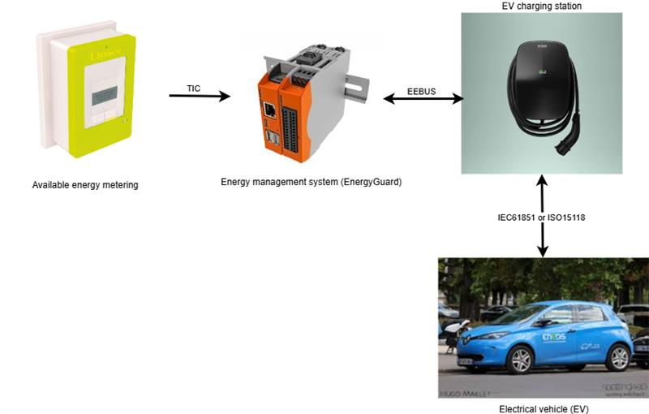

Data Model
Introduction
The tic4eebus project is organized around 4 actors:
- The available energy metering device (Linky meter)
- The energy manager responsible for limiting the electric vehicle (EnergyGuard in the EEBUS standard)
- The electric vehicle charging station
- The electric vehicle

Each of the above actors has a specific data model.
Metering Device Data Model (Meter)
The Linky meter provides the following data:
| Name | Description | Mode | Format | Value |
|---|---|---|---|---|
| SerialNumber | Linky meter serial number | Read | 12-characters string | "041976216986" |
| DateTime | Linky meter timestamp | Read | Date in YY/MM/DD hh:mm:ss format | "25/10/09 09:26:12" |
| BreakerOpened | Linky meter circuit breaker status | Read | Boolean | - true if the circuit breaker is open - false otherwise |
| PhaseCount | Number of phases on the Linky meter | Read | Integer | - 1 if the meter is single-phase - 3 if the meter is three-phase |
| OverLoadPowerLimit | Overload power limit of the Linky meter in VA across all phases | Read | Integer | From 0 to 99000 |
| OverLoadCurrentLimit1 | Overload current limit of the Linky meter in A on phase 1 | Read | Decimal | From 0.0 to 99000.0 |
| OverLoadCurrentLimit2 | Overload current limit of the Linky meter in A on phase 2 | Read | Decimal | From 0.0 to 99000.0 |
| OverLoadCurrentLimit3 | Overload current limit of the Linky meter in A on phase 3 | Read | Decimal | From 0.0 to 99000.0 |
| RmsVoltage1 | RMS voltage at the Linky meter in V on phase 1 | Read | Integer | From 0 to 99999 |
| RmsVoltage2 | RMS voltage at the Linky meter in V on phase 2 | Read | Integer | From 0 to 99999 |
| RmsVoltage3 | RMS voltage at the Linky meter in V on phase 3 | Read | Integer | From 0 to 99999 |
| RmsCurrent1 | RMS current at the Linky meter in A imported on phase 1 | Read | Decimal | From 0.0 to 999.0 |
| RmsCurrent2 | RMS current at the Linky meter in A imported on phase 2 | Read | Decimal | From 0.0 to 999.0 |
| RmsCurrent3 | RMS current at the Linky meter in A imported on phase 3 | Read | Decimal | From 0.0 to 999.0 |
| ApparentImportPower | Apparent import power at the Linky meter in VA across all phases | Read | Integer | From 0 to 99999 |
| ApparentImportPower1 | Apparent import power at the Linky meter in VA on phase 1 | Read | Integer | From 0 to 99999 |
| ApparentImportPower2 | Apparent import power at the Linky meter in VA on phase 2 | Read | Integer | From 0 to 99999 |
| ApparentImportPower3 | Apparent import power at the Linky meter terminals in VA on phase 3 | Read | Integer | From 0 to 99999 |
| AvailableCurrent1 | Available RMS current at the Linky meter in A on phase 1 | Read | Decimal | From 0.0 to 99000.0 |
| AvailableCurrent2 | Available RMS current at the Linky meter in A on phase 2 | Read | Decimal | From 0.0 to 99000.0 |
| AvailableCurrent3 | Available RMS current at the Linky meter in A on phase 3 | Read | Decimal | From 0.0 to 99000.0 |
Energy Manager Data Model
General Data
The general data of the energy manager are as follows:
| Name | Description | Mode | Format | Value |
|---|---|---|---|---|
| IsConnected | EEBUS connection status | Read | Boolean | - true if the EMS is connected with the charging station - false otherwise |
| HasMeterData | Connection status with the Linky meter | Read | Boolean | - true if the Linky meter data is being read - false otherwise |
| IsOpevSupported | Compliance indicator with the OPEV use case of the EEBUS standard | Read | Boolean | - true if the OPEV use case is supported - false otherwise |
Electric Vehicle Charge Limitation Data (OverloadProtection)
The charge limitation data of the energy manager are as follows:
| Name | Description | Mode | Format | Value |
|---|---|---|---|---|
| Active | EV charge limitation activation status | Read/Write | Boolean | - true if a limitation is applied - false otherwise |
| Value | EV charge limitation value in A | Read/Write | Decimal | From 0.0 to 32.0 |
| Start | EV charge limitation start timestamp | Read/Write | Date in UTC format | "2025-10-09T10:35:00+02:00" |
| ResultCode | Result code of the last EV charge limitation | Read/Write | Enumeration | Values from ErrorNumberType |
| ResultDescription | Result description of the last EV charge limitation | Read/Write | String | Detailed description of the charge limitation error |
| LockActive | EV charge limitation lock activation status | Read/Write | Boolean | - true if the lock is active - false otherwise |
| LockStart | EV charge limitation lock start timestamp | Read/Write | Date in UTC format | "2025-10-09T10:35:00+02:00" |
Diagnostic Data (Diagnosis)
The diagnostic data of the energy manager are as follows:
| Name | Description | Mode | Format | Value |
|---|---|---|---|---|
| OperatingState | Operational state of the energy manager | Read/Write | Enumeration | Values from DeviceDiagnosisOperatingStateEnumType |
| LastErrorCode | Last error of the energy manager | Read/Write | String | Detailed description of the manager error |
Charging Station Data Model (EVSE)
The electric vehicle charging station provides us with the following data:
| Name | Description | Mode | Format | Value |
|---|---|---|---|---|
| IsConnected | Connection status with the charging station | Read | Boolean | - true if the charging station is connected - false otherwise |
| OperatingState | Operational state of the charging station | Read | Enumeration | Values from DeviceDiagnosisOperatingStateEnumType |
| ManufacturerData | Manufacturer data identifying the charging station | Read | Structure | Values from DeviceClassificationManufacturerDataType |
Electric Vehicle (EV) Data Model
The electric vehicle provides us with the following data:
| Name | Description | Mode | Format | Value |
|---|---|---|---|---|
| IsConnected | Connection status between the vehicle and the charging station | Read | Boolean | - true if the vehicle is connected - false otherwise |
| ChargeState | Vehicle charging status | Read | Enumeration | - Unknown if the charging station's operational state is invalid - unplugged if the charging station's operational state cannot be read - active if the charging station is operating correctly - paused if the charging station is in standby mode - error if the charging station is in error - finished if the charging station has completed its operations |
| CommunicationStandard | Communication protocol between the vehicle and the charging station | Read | Enumeration | - iec61851 for IEC 61850 protocol - iso15118-2ed1 for 15118-2 protocol first edition - iso15118-2ed2 for 15118-2 protocol second edition |
| AsymmetricChargingSupport | Indicates if charging with different currents per phase is possible | Read | Boolean | - true if three-phase asymmetric charging is supported - false otherwise |
| Identifications | Vehicle identifiers | Read | Array | Array of structures containing: - ValueType for the type (IdentificationTypeEnumType) - Value for the identifier as string |
| ManufacturerData | Vehicle manufacturer data | Read | Structure | Values from DeviceClassificationManufacturerDataType |
| ChargingPowerLimits | Vehicle power limitations | Read | Structure | Structure containing decimal values: - Min for minimum charging power - Max for maximum charging power - Standby for power in standby mode |
| IsInSleepMode | Vehicle sleep mode status | Read | Boolean | - true if the charging station is in sleep mode - false otherwise |
| PhasesConnected | Number of connected vehicle phases | Read | Integer | 1, 2, or 3 phases |
| CurrentPerPhase | Vehicle charging current measurement on each phase | Read | Array | List of decimal values for each phase in Amperes |
| PowerPerPhase | Vehicle charging power measurement on each phase | Read | Array | List of decimal values for each phase in Watts |
| EnergyCharged | Energy charged by the vehicle measurement | Read | Decimal | Value in Watt-hours |
| CurrentLimits | Vehicle current limitations on each phase | Read | Structure | Structure containing decimal values in Amperes: - Min for the minimum current of each phase - Max for the maximum current of each phase - Default for the default current of each phase |
| LoadControlLimits | Vehicle charging current limitations on each phase | Read/Write | Array | Array of structures containing the values: - Phase to indicate the phase (ElectricalConnectionPhaseNameEnumType) - IsChangeable to indicate if the limitation is modifiable (true / false) - IsActive to indicate if the limitation is active (true / false) - Value for the decimal current limitation in Amperes |
EEBUS Data Model
Reference Documents
The reference documents used for the data model are:
ErrorNumberType
The ErrorNumberType enumeration (see Table 19) indicates the type of error.
It can take the following values:
| Enumeration Value | Enumeration Description |
|---|---|
| 0 | No Error |
| 1 | General Error |
| 2 | Timeout |
| 3 | Overload |
| 4 | Destination unknown |
| 5 | Destination unreachable |
| 6 | Command not supported |
| 7 | Command rejected |
| 8 | Restricted function exchange combination not supported |
| 9 | Binding is necessary for this command |
DeviceDiagnosisOperatingStateEnumType
The DeviceDiagnosisOperatingStateEnumType enumeration (see Table 45) describes the operational state of the equipment.
It can take the following values:
| Enumeration Value | Enumeration Description |
|---|---|
| normalOperation | The device does its normal operation without any errors or limitations |
| standby | The device is in standby mode and does nothing but waiting for user interaction and listens on its communications protocol for external commands |
| failure | A failure occurred and the device cannot run as desired. Its normal functionality is likely not given |
| serviceNeeded | The device needs some kind of service. Possibly the normal functionality is not given |
| overrideDetected | The device detected an override. Normal operation may be given or the device is in some safe mode |
| inAlarm | An alarm (or emergency) occurred and user interaction is needed. Normal operation may be given or the device is in some safe mode |
| notReachable | The device has finished its temporary operation. As long as it remains in state finished, the normal operation is not given |
| finished | The equipment has temporarily completed its operations. As long as it remains in this state, it is not operating normally |
| temporarilyNotReady | The device is temporarily not ready for normal operation (e.g. due to maintenance) |
| off | The device is off. Hence, it cannot operate |
DeviceClassificationManufacturerDataType
The DeviceClassificationManufacturerDataType data structure (see §5.3.7.2) identifies and describes equipment using the following fields:
| Field Name | Field Description | Field Format | Example |
|---|---|---|---|
| DeviceName | Equipment name | String | "EVBox-Livo-EVB-500-021-302" |
| DeviceCode | Equipment code | String | |
| SerialNumber | Serial number | String | "EVB-500-021-302" |
| SoftwareRevision | Software version | String | |
| HardwareRevision | Hardware version | String | |
| VendorName | Vendor name | String | |
| VendorCode | Vendor code | String | |
| BrandName | Brand name | String | "EVBox" |
| PowerSource | Power source | String | |
| ManufacturerNodeIdentification | EEBUS node manufacturer identification | String | |
| ManufacturerLabel | Manufacturer label | String | |
| ManufacturerDescription | Manufacturer description | String |
IdentificationTypeEnumType
The IdentificationTypeEnumType enumeration (see Table 231) describes the type of identifier.
It can take the following values:
| Enumeration Value | Enumeration Description |
|---|---|
| eui48 | MAC address in EUI-48 format |
| eui64 | MAC address in EUI-64 format |
| userRfidTag | RFID tag used for identification |
ElectricalConnectionPhaseNameEnumType
The ElectricalConnectionPhaseNameEnumType enumeration (see Table 209) indicates the measured phase(s).
It can take the following values:
| Enumeration Value | Enumeration Description |
|---|---|
| a | Phase a (or L1) |
| b | Phase b (or L2) |
| c | Phase c (or L3) |
| ab | Phase a and b (or L1 and L2) |
| bc | Phase b and c (or L2 and L3) |
| ac | Phase a and c (or L1 and L3) |
| abc | Phase a, b and c (or L1, L2 and L3) |
| neutral | The neutral conductor of a connection |
| ground | The ground conductor of a connection |
| none | No phase specified or available |